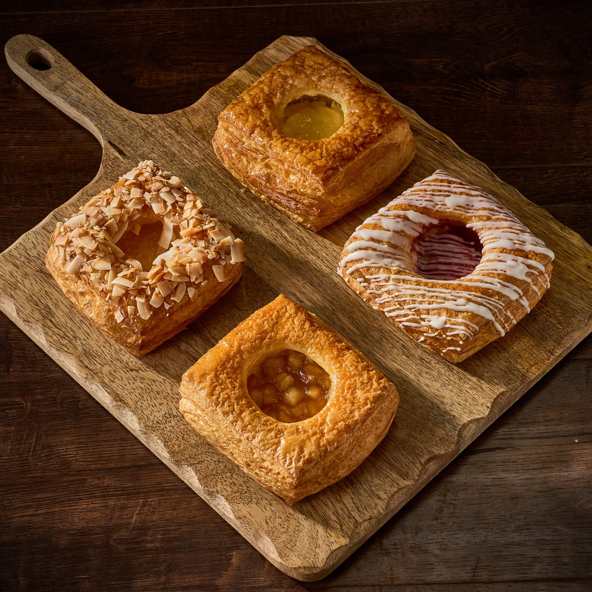

Menu & Drinks
Our café serves warm drinks, fresh pastries, and simple snacks for reading, studying, and relaxing.
Coffee
- Classic Latte - $4.50
- Vanilla Cappuccino - $4.75
- Caramel Cold Brew - $5.00
- Mocha - $4.95
Tea
- Earl Grey Tea - $3.50
- Jasmine Green Tea - $3.75
- Chai Latte - $4.50
- Herbal Chamomile - $3.50

Pastries
- Butter Croissant - $3.25
- Blueberry Muffin - $3.50
- Chocolate Scone - $3.75
- Lemon Pound Cake - $4.00
Seasonal Special
Try our Honey Cinnamon Latte with a warm apple pastry. It is a customer favorite for quiet reading afternoons.